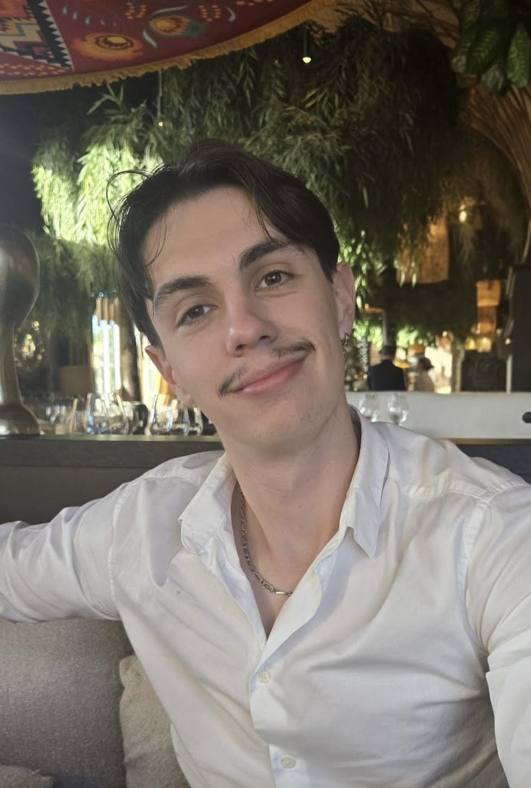

Étudiant en 2ème année de FISA Mécanique & Transport à l'UTBM. Passionné par la conception, la simulation et les systèmes mécaniques complexes. Je cherche une opportunité à l'international pour repousser mes limites.

Je suis Noah Bellanger, étudiant en 2e année de génie mécanique à l'UTBM (Belfort-Montbéliard), spécialisé en Génie Mécanique et Transports. Mon parcours en alternance m'expose à des problématiques industrielles réelles dès la formation.
Curieux et méthodique, je me passionne pour la conception de systèmes mécaniques, le dimensionnement de transmissions et la simulation structurale. J'ai notamment travaillé sur des projets de motoréducteurs et de calcul de structures.
Ouverts aux défis techniques comme humains, je cherche à acquérir une expérience internationale significative dans tout domaine du génie mécanique.
👆 Clique sur un projet pour voir les détails
Dimensionnement complet : moteur DC 24V, motoréducteur à vis sans fin (Transtecno CM026), couronne d'orientation. Calcul d'inertie, validation des couples, sélection du pignon.
Système de tracking sportif automatisé avec macros VBA : saisie guidée, correction des données, suivi d'objectifs, progression des charges selon les performances.
Déflexion par méthode de Castigliano et charges fictives. Application aux structures isostatiques et hyperstatiques, calcul des contraintes et déplacements.
Migration de lacunes, cinétique de nucléation et dislocations dans les métaux. Diagrammes TTT/CCT pour la prédiction des microstructures.
Dans le cadre de ma formation en alternance à l'UTBM, je recherche un stage de 3 mois à l'étranger. Polyvalent et motivé, j'accueille toute proposition en conception, R&D, simulation, maintenance ou transport.
Autonome, rigoureux et adaptable, je m'intègre rapidement dans un environnement exigeant et multiculturel.
Disponible dès fin août 2026Les régions du monde où je cherche mon stage — clique sur un marqueur pour en savoir plus.
Une offre de stage, une question, ou simplement envie d'échanger ? Écrivez-moi, je réponds sous 24h.